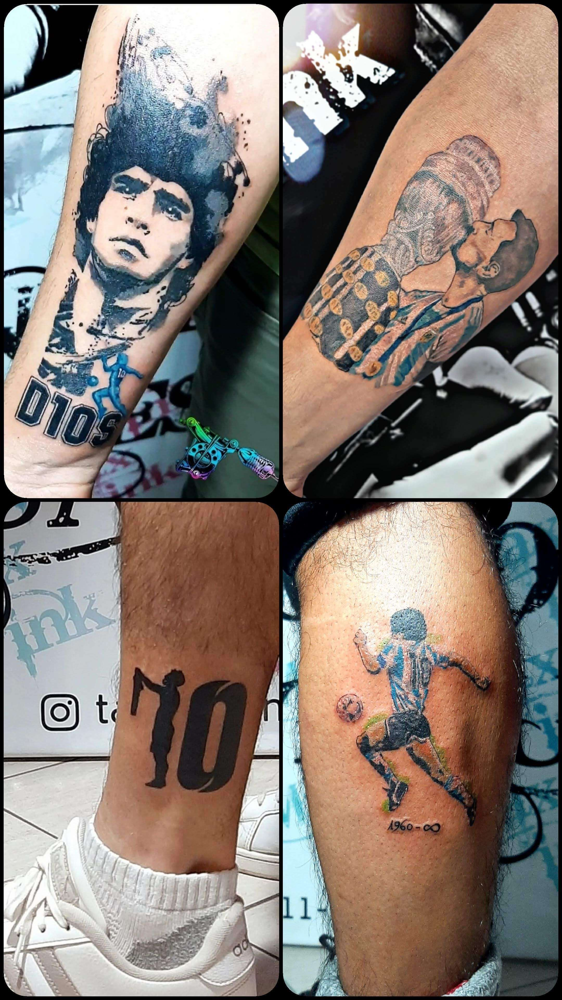

Tatuajes Max-Ink
Max-Ink es un estudio de tatuaje fundado en 2014 por EL COSI COSI. Con sede en la ciudad, el estudio ha sido reconocido por su trabajo de alta calidad y su enfoque en la creatividad y la innovación. En Max-Ink, el trabajo de tatuaje se considera una forma de arte y una expresión personal. Cada cliente es tratado de manera única y el equipo trabaja estrechamente con ellos para crear diseños que sean únicos y personalizados. La pasión y el compromiso por crear tatuajes de alta calidad son evidentes en cada uno de los diseños que se crean.

¿Que es el tatuaje?
El tatuaje es mucho más que una simple técnica de dibujo en la piel. Para algunos, representa una forma de expresión artística, una manera de plasmar su personalidad y estilo de vida en su propio cuerpo. Para otros, es una forma de contar historias, honrar a sus seres queridos o transmitir un mensaje importante. El tatuaje es una elección personal y única que refleja la personalidad y la identidad del individuo. A través del diseño y la ubicación, se puede crear una obra de arte que tiene un significado profundo para el portador.